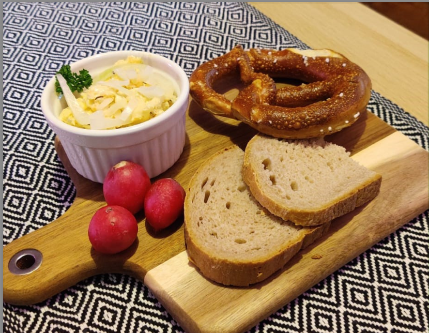

Obazda

Quick and easy Bavarian cheese spread
Tip: leave cheese and butter outside the fridge to soften up
Ingredients
- 200g Camembert cheese
- 70g butter
- 1 small onion
- Paprika powder
- Caraway seeds
- Salt
- Pepper
Steps
- Cut the cheese into small cubes
- Mix butter with the cheese
- Cut onion into slices or cubes
- Mix cheese, butter, caraway seeds, paprika, salt and pepper together with a fork
- Garnish with onions